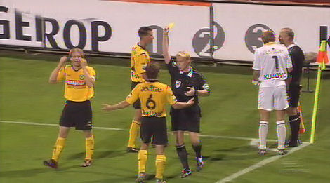
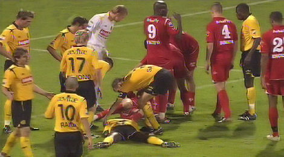

|
FC
Twente - Roda JC (2-2) 8 september 2006
|
Veel jeugdige Rodasupporters vanavond.
Laatste aanwinst van Roda, Adil Ramzi, in de basis.

Hij beloofde er twee te maken. De eerste scoort hij in de 11e min.
N'Kufo heeft ruzie met Kah.
Wielaert "scoort" met zijn dijbeen de gelijkmaker: 1-1, (24'). De bal passeerde
echter niet volledig de doellijn. De grensrechter die dit nooit goed had kunnen
beoordelen (speler ligt voor zijn gezichtsveld) benadeelt Roda.
De situatie vanuit een ander perspectief.
Foto: ASP Parkstad

De protesten van Roda leveren ook nog eens een gele kaart op voor Meeuwis.
De geblesseerde als wel geschorste Cissé op de tribune.

Kah is in botsing gekomen met een Twente-speler. Het loopt voor beiden goed af.
Kah heeft wel nog een knuffel en een natte spons van Norbert nodig.
Intikker van Ramzi na klungelig verdedigen door Twente: 1-2, (27'). Foto:
SV-online
Vlak na rust maakt Bakircioglu alweer gelijk: 2-2, (49').
Foto: SV-online Het
verslag van Voetbal International: Adil Ramzi heeft in
zijn eerste wedstrijd voor Roda JC de Limburgers aan kop van de Eredivisie
geschoten. De van AZ overgekomen Marokkaan scoorde twee keer. Voor de winst
tegen FC Twente was het echter niet genoeg: 2-2.
In het Arke Stadion ontspon zich een amusant duel met curieuze treffers. Zo
zorgde Robbie Wielaert met zijn dijbeen voor 1-1. Die goal werd goedgekeurd op
aanraden van de assistent-scheidsrechter, die als een van de weinigen
constateerde dat de bal in zijn geheel over de doellijn was geweest.
Ook het tweede doelpunt van Ramzi was wat gelukkig. De aanvaller zette goed door
na een voorzet van Andres Oper en had het geluk dat hij de bal na de kluts voor
zijn voeten terugvond. Ramzi produceerde zittend een rollertje dat tergend
langzaam in de goal verdween. Ook bij het eerste doelpunt van Roda kreeg Ramzi
de bal wat gelukkig voor zijn voeten.
Roda speelde het spelletje slim. Het liet Twente het spel maken en dat ging de
Tukkers niet goed af. De aanvallen van de thuisclub strandden keer op keer op
een meter of twintig van het doel.
Met aankoop Orlando Engelaar na de rust als invaller in de ploeg trok Twente het
spel iets meer naar zich toe. De beloning kwam al snel. Sharbel Touma kreeg op
de linkerflank alle tijd en ruimte om voor te zetten en Kennedy Bakircioglu kwam
naar de bal toe, waar Roda-doelman Vladan Kujovic afwachtte: 2-2.
Roda bleef op de been en mag zich de morele winnaar noemen. Met zeven punten uit
drie wedstrijden hebben de Limburgers een uitstekende start van de competitie.
Het collectief van Huub Stevens bleef voor het negende duel op rij in de
Eredivisie zonder nederlaag.
© Koempels Pleasure Dome
|